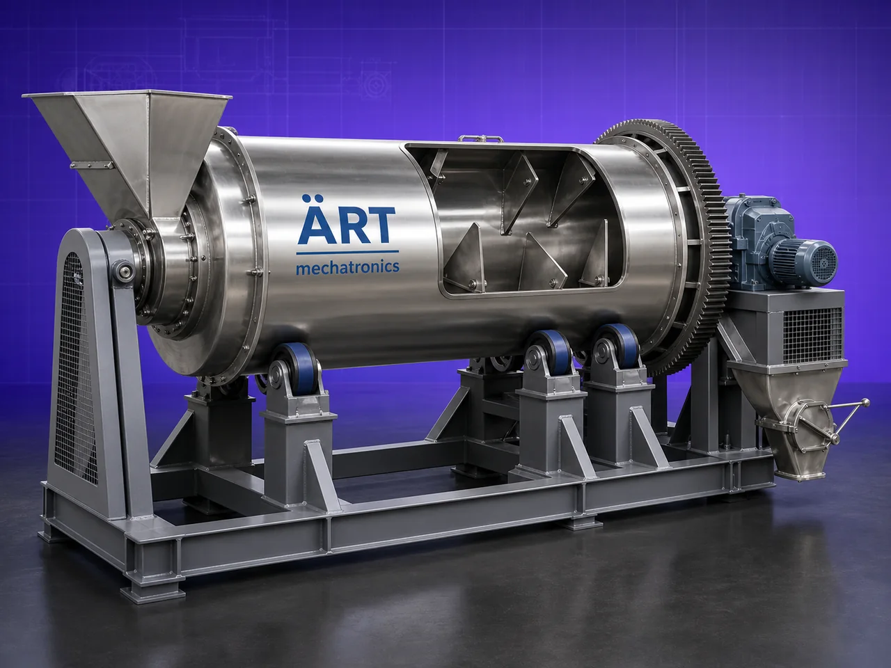

Rotary Mixer / Rotary Drum Mixer Machine (Industrial Drum Blending & Batch Mixing System)
A Rotary Drum Mixer Machine, also known as a Rotary Mixer, Drum Blender, or Rotating Drum Mixing Machine, is a highly efficient industrial mixing equipment designed for gentle and uniform blending of powders, granules, flakes, seeds, pellets, crystals, and bulk materials.

About the Rotary Mixer
The machine operates using a rotating cylindrical drum, where materials tumble continuously inside the chamber, creating a gravity-based cascading mixing action that ensures homogeneous blending with minimal product damage.
Rotary drum mixers are widely used in industries such as:
• Food processing
• Agro products
• Fertilizers
• Chemicals
• Minerals
• Seeds
• Animal feed
• Construction materials
• Pharmaceutical industries
where gentle mixing, bulk blending, and low-shear processing are essential.
The machine is especially suitable for:
- Fragile materials
- Bulk batch mixing
- Granular products
- Seed coating and blending
- Low-maintenance industrial processing
ART Mechatronics offers high-performance rotary drum mixer machines, engineered for uniform blending, energy-efficient operation, hygienic processing, and reliable industrial performance.
One machine, many names
Buyers search for this equipment under many terms — we manufacture all of them:
Working Principle of Rotary Drum Mixer Machine
Creates gentle cascading mixing action
Types of Rotary Drum Mixer Machines
Industries Using Rotary Drum Mixer Machine
🍃 Food Processing Industry
- Powder and granule blending
🌾 Agro & Seed Industry
- Seed mixing and coating
⚗️ Chemical Industry
- Chemical powder blending
🐄 Animal Feed Industry
- Feed mixing applications
🏗️ Construction Material Industry
- Dry powder blending
⛏️ Mineral Industry
- Bulk material mixing
💊 Pharmaceutical Industry
- Granule blending applications
Features & Advantages
- Gentle and uniform mixing action
- Suitable for fragile materials
- Low shear blending process
- Energy-efficient operation
- Simple and robust machine design
- Low maintenance requirement
- Suitable for bulk batch mixing
- Optional coating and spraying system
- Hygienic and easy-to-clean construction
Technical Highlights
- Capacity: Small batch to large industrial scale
- Mixing Type: Rotary drum tumbling action
- Construction: Stainless Steel / Mild Steel
- Drum Design: Horizontal / inclined drum
- Operation: Manual / Automatic / PLC-based
- Drive: Motor with gearbox
- Optional Features:
- Coating system
- Spraying system
- Heating arrangement
Turnkey Mixing Solutions
ART Mechatronics offers:
- Complete rotary drum mixer system design
- Coating and spraying integration
- Feeding and discharge automation
- Dust collection systems
- Installation & commissioning
- After-sales service & AMC
Why Choose Art Mechatronics
- Expertise in industrial mixing systems
- Customized solutions for bulk material processing
- High-performance and durable machines
- Energy-efficient and hygienic designs
- Proven industrial reliability
Applications
- Food Processing Plants
- Agro & Seed Processing Units
- Chemical Manufacturing Plants
- Feed Processing Industries
- Mineral Processing Units
- Pharmaceutical Manufacturing Facilities
Related Mixing & Blending machines
Get pricing & specs for the Rotary Mixer
Share the product, target capacity, current process and plant location. These details help our engineers discuss the right machine or line configuration.
One partner, from design to start-up
ART Mechatronics designs, manufactures, installs and commissions your Rotary Mixer solution with regional presence in India, UAE and Thailand.